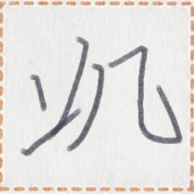

← Previous
Index
Next →
English:
Give Mr. Putt a phone call.
Chinese:
给星先生打电话。
Chinese (pinyin):
Gěi Xīng xiānsheng dǎ diànhuà.
Pekzep (latin transcription): sui1 zep1 kik1 zep1 ie pet2 xizi.
Pekzep (hanzi transcription):
使言機言於星xizi。
Pekzep (linzklā):

Sound
Recording by jekto.vatimeliju (not reviewed) / 这是jekto.vatimeliju (not reviewed)的录音。
:
Your browser does not support the audio element.
Analysis:
sui1 zep1 kik1 zep1
使言機言
verb
to make a phone call to
ie
於
coverb
(indirect object of a verb)
pet2
星
name
Putt (name)
xizi
xizi
name suffix
Mr. ..., Ms. ...